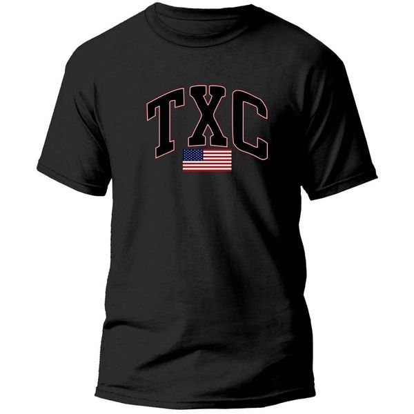
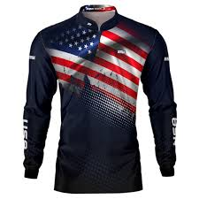
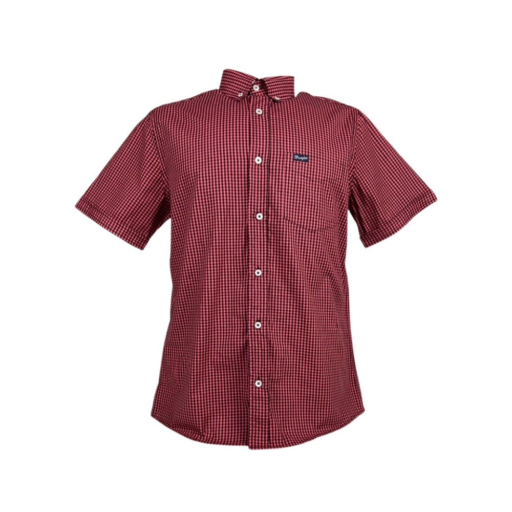

Tipos de camisetas country

A marca TXC oferece uma linha de camisetas casuais com foco em estilo e conforto. Embora não haja uma descrição
técnica universal para todas as camisas TXC casuais, alguns aspectos comuns que podem ser encontrados nas
especificações de suas peças incluem:
Material: Camisas casuais TXC geralmente utilizam tecidos de alta qualidade como algodão, poliéster ou misturas
de algodão com fibras sintéticas, proporcionando conforto e durabilidade. Algumas versões podem também ter uma
tecnologia de secagem rápida para aumentar a praticidade no uso diário.
Design:
Modelagem slim fit ou regular fit, dependendo do estilo desejado.
Detalhes como logotipos discretos ou estampas minimalistas que reforçam a identidade da marca.
Cores variadas: A marca costuma oferecer uma gama de cores clássicas como branco, preto, cinza e tons mais
vibrantes.
Acabamentos:
Costuras reforçadas: Garantem maior resistência ao desgaste do uso diário.
Gola: Pode variar entre modelos com gola careca ou gola V, dependendo da linha.
Etiqueta: Etiqueta geralmente em tecido, posicionada discretamente, sem causar desconforto.
Conforto: Muitas camisas TXC têm acabamento macio e leve, ideal para o uso casual no dia a dia.
Durabilidade: Como muitas marcas de moda casual, a TXC busca materiais que proporcionem resistência, mantendo a
qualidade da peça mesmo após várias lavagens.

A BRK (ou BRK Country) é uma marca especializada no segmento de moda country, focando na produção de roupas,
incluindo camisas, com estilo country, western e sertanejo. Abaixo estão algumas especificações e detalhes
importantes sobre a marca de camisas BRK Country.
Estilo e Conceito
A BRK Country tem um foco no estilo country moderno, trazendo uma combinação de elementos tradicionais e
contemporâneos. Suas camisas são projetadas para atender a um público que gosta do estilo de vida do campo,
festas como rodeios e também para quem curte a estética do universo sertanejo e country.
Materiais e Tecidos:
Algodão: A marca utiliza principalmente algodão de alta qualidade em suas camisas, proporcionando conforto,
frescor e durabilidade. Isso é ideal para quem busca uma peça tanto para uso diário quanto para ocasiões
especiais.
Tecido misto: Em algumas peças, pode haver uma mistura de tecidos como poliéster e elastano, garantindo maior
elasticidade e ajuste perfeito ao corpo.
Estampas: A BRK Country é conhecida por suas camisas com estampas variadas, como xadrez, listras e outros
padrões típicos do estilo country, com detalhes bordados, que trazem um toque moderno.
Design e Modelagem:
Camisas de manga longa e curta: A BRK oferece tanto camisas de manga longa, ideais para o frio, quanto camisas
de manga curta para climas mais quentes.
Cores: A paleta de cores varia entre tons tradicionais como azul, vermelho, branco e marrom, além de padrões de
xadrez e outras estampas específicas que fazem referência ao universo country.
Detalhes: Alguns modelos apresentam detalhes como bordados, apliques de couro, e botões metálicos,
características que são bem comuns em camisas com estilo western.
Modelagem ajustada: A modelagem é pensada para valorizar a silhueta, com cortes ajustados que proporcionam um
bom caimento.
Público-Alvo:
O público da BRK Country é principalmente composto por homens e mulheres que gostam do estilo country e de
atividades relacionadas ao universo rural, rodeios e festas sertanejas. A marca busca agradar tanto aqueles que
vivem o estilo de vida no campo quanto aqueles que adotam essa estética na cidade.
Diferenciais da Marca:
Estilo autêntico: A BRK Country mistura elementos clássicos do estilo country com toques modernos, criando peças
que são versáteis e com apelo visual forte.
Qualidade e conforto: Além do visual, a marca foca no conforto das peças, utilizando tecidos que são suaves ao
toque e ideais para o uso prolongado.
Acessórios e complementos: A BRK Country também pode oferecer acessórios como cintos, botas e chapéus, que
complementam o visual country.
Preço e Acessibilidade:
As camisas da marca BRK Country têm preços acessíveis em comparação com outras marcas de moda country,
tornando-se uma opção interessante para quem busca qualidade, estilo e conforto a um preço justo.

A camisa country social é uma peça de vestuário que combina a elegância das camisas sociais com o estilo
tradicional do universo country. Muitas marcas especializadas nesse estilo, como a BRK Country, criam modelos
que atendem a essa fusão de sofisticação e rusticidade. Abaixo, estão as especificações típicas das camisas
sociais country:
Estilo Country Social: As camisas sociais country são projetadas para ocasiões mais formais, como jantares,
festas de rodeio, eventos sertanejos ou até mesmo para o uso diário em ambientes que requerem um visual mais
arrumado. Elas misturam o estilo country com o toque elegante e mais arrumado de uma camisa social.
Versatilidade: Essas camisas podem ser usadas tanto em eventos formais (casamentos, festas) quanto em ocasiões
mais informais, como baladas sertanejas ou festas temáticas.
Materiais e Tecidos:
Algodão: A maioria das camisas sociais country utiliza algodão de boa qualidade. O algodão é uma fibra natural
que proporciona conforto, leveza e respirabilidade, sendo ideal para quem busca uma peça confortável e prática.
Tecidos Mistos: Algumas camisas podem ter mistura de algodão com poliéster, elastano ou lycra, oferecendo maior
flexibilidade e um caimento mais ajustado.
Tecido Acetinados ou de Brilho: Para dar um toque de sofisticação, muitos modelos de camisas sociais country
possuem acabamentos acetinados ou tecidos que proporcionam leve brilho, o que as torna adequadas para eventos
mais formais.
Design e Modelagem:
Modelagem: As camisas sociais country são geralmente ajustadas, com modelagem slim fit (mais ajustada ao corpo),
mas também podem ser encontradas em modelos mais tradicionais, mais soltos e confortáveis. A modelagem slim fit
é ideal para um visual mais moderno e alinhado.
Cores e Estampas:
Cores sólidas: Tons como branco, azul claro, azul escuro (navy), preto, bege e cinza são populares, oferecendo
um estilo sofisticado e versátil.
Xadrez: O xadrez é uma estampa tradicionalmente associada ao estilo country. Em camisas sociais, as estampas de
xadrez podem ser mais discretas, em tons sóbrios, para manter a formalidade.
Listras: Algumas camisas sociais country apresentam listras finas e discretas, proporcionando um visual
clássico, mas ainda dentro do estilo country.